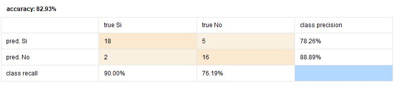

Predicción de segundo ataque cardíaco
Datos utilizados data set cardiológico
El presente data set consta de información de pacientes :
En primer lugar según CRISP - DM se procede a la comprensión del área de estudio, la misma refiere a mediciones de diferentes variables de pacientes cardiológicos.
En segundo lugar se procede a la comprensión de los datos, observamos los atributos medidos y su significado:
2do_Ataque_Corazon: Este atributo existe solamente en el dataset de entrenamiento. Es la variable objetivo o de predicción (“label” en RM). En el dataset de entrenamiento, este atributo contiene “SI” para aquellos individuos que han sufrido un segundo ataque al corazón, y “No” en caso contrario.
Atributo |
Tipo de atributo |
Rango |
Distribución |
|---|---|---|---|
| Estado_civil: Asume los valores: 0 = soltero; 1 = casado, 2 = divorciado y 3 = viudo. | Polinominal | 0-3 | - | Sexo: Asume los valores 0 = femenino; 1= masculino. |
Binominal | 0-1 | - | Categoria_Peso: Toma tres valores: 0 = normal; 1 = sobrepeso; 2 = obeso. |
Categórica tomada como integer | 0-2 | - | Colesterol: nivel de colesterol de la persona, tal como se ha registrado en el momento del tratamiento indicado cuando su más reciente ataque al corazón. |
Continua | 122-239 | No tiene una forma de distribución conocida | Manejo_stress: Indica si el paciente ha participado previamente de cursos de manejo del estrés: 0 = no; 1 = si. |
Boniminal | 0-1 | - | Trat_ansiedad: Atributo que toma valores de tipo entero entre 0 y 100 indicativo del nivel natural de estrés de cada persona y de su habilidad para manejarlo. Poco tiempo después de que la persona se recuperara de su primer ataque, se le administró un test de ansiedad natural estándar. Los valores están tabulados en incrementos de 5. Un valor de 0 indicaría que la persona nunca siente ansiedad, presión o estrés en ninguna situación, mientras que un valor de 100 indicaría que la persona vive en un estado continuo de sobrecarga e incapaz de lidiar con su situación. |
Categórica entendida como continua | 35-80 | No tiene una forma de distribución conocida - podría ser normal con sesgo a la derecha |
Analizados los atributos se identifican los rangos de los mismos,
 Como se observa en esta imagen los 0 indican que no hay atributos faltantes (missing), los rangos no denotan valores anormales (outliers)
Como se observa en esta imagen los 0 indican que no hay atributos faltantes (missing), los rangos no denotan valores anormales (outliers)
Se observan los atributos y las posibles correlaciones que pueden existir entre los mismos. Por ejemplo podrían identificarse entre manejo del estrés y tratamiento de la ansiedad posibles correlaciones y también hay estudios que vinculan niveles de colesterol con factores de estrés así como con el sexo de la persona.
A continuación se realiza la preparación de los datos:
Se observa la matriz de correlación entre atributos:
 Se observa que los atributos continuos más correlacionados podrían ser edad y tratamiento de la ansiedad pero su valor es bajo.
A su vez todos los atributos son importantes y aportan a la predicción de la variable dependiente, por tanto no se seleccionan atributos.
Se observa que los atributos continuos más correlacionados podrían ser edad y tratamiento de la ansiedad pero su valor es bajo.
A su vez todos los atributos son importantes y aportan a la predicción de la variable dependiente, por tanto no se seleccionan atributos.
Algo importante a realizar es la normalización de los datos para que los rangos de variación de los mismos no sean muy disímiles.
Dado el problema que se aborda, y debido a que la variable dependiente toma los valores Sí y No (es categoríca - binominal) se considera que aplicar un método de regresión logística es adecuado para el modelo.
Con respecto a la evaluación del modelo, se divide el set de información rotulada en datos de entrenamiento y datos de validación para observar qué tan bien predice el modelo y obtener resultados de su performance. En cuanto a esto se observa que tiene una precisión del 82,93%, observando que 18 casos predichos como sí eran efectivamente sí, mientras que 5 son falsos positivos. Por otra parte 16 casos fueron correctamente predichos como No mientras que 2 fueron falsos negativos.
5. Evaluación del modelo, se revisan los pasos seguidos para crearlo y cuánto se adapta al negocio.6. Implantación implica la organización de la información, su presentación y disposición para poder transmitir al cliente.